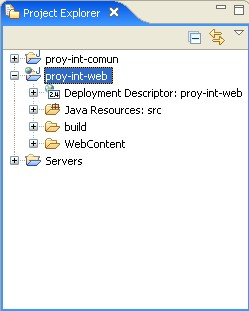

Aplicación web con servlets
Introducción
En esta sesión de integración incorporaremos la estructura de clases (TransferObjects) y los DAOs implementados en las sesiones anteriores, a una aplicación web dinámica que, mediante servlets que utilicen estas clases previas, aportarán todas las funcionalidades de los DAOs a la aplicación web.
Creación del proyecto web
En primer lugar, vamos a crear un proyecto web dinámico (New - Dynamic Web Project), llamado proy-int-web. Dejamos que cree las carpetas por defecto WebContent (donde pondremos nuestras páginas HTML y JSP, aparte de librerías, web.xml y demás), y src (donde pondremos nuestros servlets y otras clases), y build (para compilar y unir toda la aplicación antes de desplegar o empaquetar). Como nombre de contexto, le pondremos también proy-int-web.

Aparte, creamos dos carpetas fuentes, que utilizaremos más adelante, resources y test.
Después, tenemos que enlazar este proyecto web con el proyecto proy-int-comun que tenemos de sesiones anteriores. Para eso, seguimos los pasos:
-
Vamos a las Properties del nuevo proyecto, y en su Build Path añadimos el proyecto proy-int-comun en la pestaña Projects.
- Copiamos los ficheros JAR que necesitemos (de momento, las librerías de commons-logging y log4j) a WebContent/WEB-INF/lib
-
Volvemos a Properties del proyecto web, y en J2EE Module Dependencies marcamos el proyecto anterior, proy-int-comun.
Configurar el pooling de conexiones
En las sesiones de integración anteriores obteníamos una Connection simple, a través de un DriverManager, en el método createConnection de la clase es.ua.jtech.proyint.dao.FactoriaFuenteDatos. Ahora que vamos a pasar a aplicación web, vamos a mejorar el rendimiento, accediendo al pooling de conexiones que nos ofrece Tomcat. Para ello, introduciremos los siguientes cambios:
- Creamos un fichero context.xml en la carpeta META-INF de nuestro proyecto web, donde definiremos las características del pooling:
<?xml version="1.0" encoding="ISO-8859-1"?> <Context> <Resource name="jdbc/biblioteca" type="javax.sql.DataSource" auth="Container" username="root" password="" driverClassName="com.mysql.jdbc.Driver" url="jdbc:mysql://localhost:3306/biblioteca?autoReconnect=true"/> <ResourceParams name="miBD"> <parameter> <name>maxActive</name> <value>20</value> </parameter> <parameter> <name>maxIdle</name> <value>5</value> </parameter> <parameter> <name>maxWait</name> <value>10000</value> </parameter> </ResourceParams> </Context> -
Modificar el fichero web.xml de la aplicación para que referencie al recurso creado en el paso anterior. Para eso, añadimos estas líneas:
<resource-ref> <res-ref-name>jdbc/biblioteca</res-ref-name> <res-type>javax.sql.DataSource</res-type> <res-auth>Container</res-auth> </resource-ref>
-
Finalmente, tenemos que retocar el método createConnection de la clase es.ua.jtech.proyint.dao.FactoriaFuenteDatos del proyecto proy-int-comun anterior, y sustituir la línea:
conn = DriverManager.getConnection("jdbc:mysql://localhost/biblioteca", "root", "");por estas líneas:Context initCtx = new InitialContext(); Context envCtx = (Context) initCtx.lookup("java:comp/env"); DataSource ds = (DataSource)envCtx.lookup("jdbc/biblioteca"); conn = ds.getConnection();Deberemos importar, para ello, los paquetes javax.naming.* y javax.sql.*.
Fichero Ant para el nuevo proyecto
Aparte de hacer las pruebas desde WebTools, también necesitamos tener un fichero Ant que nos permita, una vez finalizado, poder desplegar y/o empaquetar definitivamente nuestra aplicación web. Para ello, añadiremos un fichero build.xml en la raíz del proyecto web, con un contenido como el siguiente:
<?xml version="1.0" encoding="UTF-8"?>
<project basedir="." default="build" name="proy-int-web">
<property name="proy-int-comun.location" value="../proy-int-comun" />
<property name="proy-int-web.location" value="." />
<!-- propiedades relativas a Tomcat -->
<property name="tomcat.home" value="C:/Archivos de programa/Apache Software Foundation/Tomcat 5.5" />
<property name="lib.home" value="${proy-int-web.location}/WebContent/WEB-INF/lib/" />
<!-- subdirectorios del proyecto -->
<property name="build.home" value="build" />
<property name="web.home" value="WebContent" />
<property name="src.home" value="src" />
<property name="test.home" value="test" />
<property name="resources.home" value="resources" />
<property name="app.name" value="proy-int-web" />
<property name="dist.home" value="dist" />
<property name="docs.home" value="doc" />
<!-- classpath -->
<path id="project.classpath">
<pathelement location="${proy-int-comun.location}/build" />
<pathelement location="${proy-int-web.location}/WebContent/WEB-INF/classes" />
<fileset dir="${tomcat.home}/common/lib/">
<include name="*.jar" />
</fileset>
<fileset dir="${proy-int-web.location}/WebContent/WEB-INF/lib/">
<include name="*.jar" />
</fileset>
</path>
<target name="init">
<mkdir dir="${dist.home}" />
<mkdir dir="${build.home}" />
</target>
<target name="clean">
<delete dir="${dist.home}" />
<delete dir="${build.home}" />
</target>
<target name="build" depends="init">
<!-- crea estr. de directorios en build -->
<mkdir dir="${build.home}/WEB-INF" />
<mkdir dir="${build.home}/WEB-INF/classes" />
<!-- copia web a build -->
<copy todir="${build.home}">
<fileset dir="${web.home}" />
</copy>
<!-- proyecto SRC -->
<ant antfile="${proy-int-comun.location}/build.xml" target="dist" inheritAll="false" />
<copy todir="${build.home}/WEB-INF/lib" file="${proy-int-comun.location}/dist/proy-int-comun.jar" />
<echo message="${ant.project.name}: ${ant.file}" />
<javac destdir="${build.home}/WEB-INF/classes">
<src path="${resources.home}" />
<src path="${src.home}" />
<src path="${test.home}" />
<classpath refid="project.classpath" />
</javac>
</target>
<!-- deploy, copiando el war a Tomcat -->
<target name="deploy" depends="dist">
<copy todir="${tomcat.home}/webapps/" file="${dist.home}/${app.name}.war" />
</target>
<!-- crear el war -->
<target name="dist" depends="build">
<mkdir dir="${dist.home}" />
<jar jarfile="${dist.home}/${app.name}.war" basedir="${build.home}" />
</target>
</project>
Acciones a realizar
De la sesión anterior, tenemos unos objetos DAO que realizan una serie de acciones sobre usuarios (IUsuarioDAO y su implementación UsuarioJDBCDAO), sobre libros (ILibroDAO y su implementación LibroJDBCDAO), y sobre operaciones de usuarios con libros (IOperacionDAO y su implementación OperacionJDBCDAO). Estos objetos, se apoyan para trabajar en sus respectivos TransferObjects (UsuarioTO, LibroTO y OperacionTO, respectivamente) para ciertas operaciones, como por ejemplo, dar de alta un nuevo usuario, libro u operación, dado el TransferObject correspondiente que almacena sus campos.
Lo que vamos a hacer en esta sesión es incorporar estas clases a la estructura de una aplicación web donde, mediante páginas HTML/JSP, indicaremos al servidor la operación que queremos realizar (por ejemplo, dar de alta un nuevo usuario, o listar todos los libros). Estas operaciones irán a parar al servlet encargado de atenderlas (veremos luego qué servlets implementar). Dicho servlet utilizará las clases auxiliares anteriores (los DAOs y los TransferObjects) para realizar la operación, y luego mostrar un resultado (una página HTML generada por él mismo, con el resultado de la operación).
Recopilando las acciones que realizan los DAOs implementados contra la base de datos, tenemos las siguientes:
- Para un usuario:
- Obtener los datos de un usuario (un objeto UsuarioTO) dados su login y password
- Dar de alta en la base de datos a un usuario, dado el objeto UsuarioTO que contiene dichos datos
- Eliminar de la base de datos a un usuario, dado el objeto UsuarioTO con sus datos
- Obtener una lista de objetos UsuarioTO, con los datos de todos los usuarios de la base de datos
- Para un libro:
- Obtener los datos de un libro (un objeto LibroTO) dado su isbn
- Dar de alta en la base de datos un libro, dado el objeto LibroTO que contiene dichos datos
- Eliminar de la base de datos un libro, dado el objeto LibroTO con sus datos
- Obtener una lista de objetos LibroTO, con los datos de todos los libros de la base de datos
- Para una operación:
- Dados un usuario (con un objeto UsuarioTO) y un libro (con un objeto LibroTO), realizar la reserva del libro por parte del usuario
Es IMPORTANTE tener en cuenta que, para que todo esto funcione de la forma más modular posible, necesitamos tener una clase es.ua.jtech.proyint.dao.FactoriaDAOs, de la sesión anterior. Esta clase será la que nos proporcione el "puente" para acceder desde los servlets a los DAOs, y desde los DAOs a las operaciones que queramos realizar. Por ejemplo, para sacar un listado de todos los libros de la biblioteca, haríamos, desde el servlet, lo siguiente:
FactoriaDAOs fd = FactoriaDAOs.getInstance(); ILibroDAO il = fd.getLibroDAO(); List<LibroTO> lista = il.getAllLibros(); ...// y luego recorrer la lista y mostrarla
Como puede verse, el esquema a seguir es que el servlet obtenga la factoría, ésta le proporcione el interfaz DAO que necesite (ILibroDAO, en este caso), y con dicho interfaz, llamar al método o métodos necesarios para completar la operación.
Servlets a desarrollar
Vamos a desarrollar un servlet para atender las peticiones de cada DAO. Dicho servlet recibirá un parámetro llamado accion, que identificará la acción a realizar para ese DAO (por ejemplo, si es un libro, el parámetro accion indicará si queremos sacar un listado, o dar de alta un libro, o borrarlo... etc).
Antes de nada, creamos en la carpeta src un paquete es.ua.jtech.proyint.servlet.accion, donde iremos colocando nuestros servlets
Servlet para acciones sobre usuarios
Crearemos un servlet en el paquete anterior, llamado UsuarioServlet, que para cada petición que le llegue:
- Distinguirá el parámetro accion de la petición:
- Si la acción es seleccionar, llamará al método selectUsuario del DAO de usuarios (pasándole como parámetros el login y password del usuario a buscar, que le llegarán en la petición). Lo que se obtenga como resultado (un objeto UsuarioTO, si todo ha ido bien), se mostrará en una página generada por el propio servlet
- Si la acción es insertar, llamará al método addUsuario del DAO de usuarios (pasándole como parámetros un objeto UsuarioTO con los datos del usuario a insertar, que le llegarán en la petición). Si la operación se pudo realizar, generará una página con un mensaje de OK, y si no, otra página con un mensaje de error.
- Si la acción es borrar, llamará al método delUsuario del DAO de usuarios (pasándole como parámetros un objeto UsuarioTO con los datos del usuario a borrar, que le llegarán en la petición). Si la operación se pudo realizar, generará una página con un mensaje de OK, y si no, otra página con un mensaje de error.
- Si la acción es listar, llamará al método getAllUsuarios del DAO de usuarios y generará una página con los datos de cada usuario (recorriendo la lista de objetos UsuarioTO que le devolverá el método)
Servlet para acciones sobre libros
Crearemos otro servlet en el paquete anterior, llamado LibroServlet, que para cada petición que le llegue:
- Distinguirá el parámetro accion de la petición:
- Si la acción es seleccionar, llamará al método selectLibro del DAO de libros (pasándole como parámetro el isbn del libro, que le llegarán en la petición). Lo que se obtenga como resultado (un objeto LibroTO, si todo ha ido bien), se mostrará en una página generada por el propio servlet
- Si la acción es insertar, llamará al método addLibro del DAO de libros (pasándole como parámetros un objeto LibroTO con los datos del libro a insertar, que le llegarán en la petición). Si la operación se pudo realizar, generará una página con un mensaje de OK, y si no, otra página con un mensaje de error.
- Si la acción es borrar, llamará al método delLibro del DAO de libros (pasándole como parámetros un objeto LibroTO con los datos del libro a borrar, que le llegarán en la petición). Si la operación se pudo realizar, generará una página con un mensaje de OK, y si no, otra página con un mensaje de error.
- Si la acción es listar, llamará al método getAllLibros del DAO de libros y generará una página con los datos de cada libro (recorriendo la lista de objetos LibroTO que le devolverá el método)
Servlet para acciones sobre operaciones
Crearemos un tercer servlet en el paquete anterior, llamado OperacionServlet, que para cada petición que le llegue:
- Distinguirá el parámetro accion de la petición (aunque sólo hay una acción en el DAO, lo dejaremos abierto por si luego hay que añadir más):
- Si la acción es reservar, llamará al método realizaReserva del DAO de operaciones (pasándole como parámetro el usuario (UsuarioTO), el libro (LibroTO), y las fechas de inicio y fin, que le vendrán en la petición). Si la operación se pudo realizar, generará una página con un mensaje de OK, y si no, otra página con un mensaje de error.
Estructura general de cada servlet
Cada servlet tendrá sus métodos doGet y doPost (este último llamará a doGet directamente). Después, en doGet distinguiremos el parámetro accion, y en función de eso, llamaremos a uno u otro método privado de la clase, que se encargará de terminar la acción. Por ejemplo, para el caso del libro:
public class LibroServlet
extends javax.servlet.http.HttpServlet
implements javax.servlet.Servlet
{
public LibroServlet() {
super();
}
public void doGet(HttpServletRequest request, HttpServletResponse response)
throws ServletException, IOException
{
String parAccion = request.getParameter("accion");
} else if ("listar".equals(parAccion)) {
// Listado de libros
listaLibros(request, response);
return;
} else if ("seleccionar".equals(parAccion)) {
// Seleccion de un libro
seleccionaLibro(request, response);
return;
} else if ("insertar".equals(parAccion)) {
// Insercion de un libro
insertaLibro(request, response);
return;
} else if ("borrar".equals(parAccion)) {
// Borrado de un libro
borraLibro(request, response);
return;
} else {
generaPagina("<h2>Comando no valido</h2>", response);
return;
}
}
donde listaLibros, seleccionaLibro, insertaLibro, borraLibro son métodos que deberéis implementar, y cada uno hará la operación indicada, tomando del request los datos que necesite, y enviando en el response la respuesta indicada. Por ejemplo, para la acción de listar todos los libros, el método listaLibros podría ser algo como:
private void listaLibros(HttpServletRequest request, HttpServletResponse response)
{
String contenido = "";
FactoriaDAOs fd = FactoriaDAOs.getInstance();
ILibroDAO il = fd.getLibroDAO();
List<LibroTO> lista = null;
try
{
lista = il.getAllLibros();
if (lista != null)
{
contenido = "<ul>";
for (int i = 0; i < lista.size(); i++)
{
LibroTO libro = lista.get(i);
contenido += "<li>" +
libro.getIsbn() + "-" +
libro.getTitulo() + "-" +
libro.getAutor() + "-" +
libro.getNumPaginas() + " pags.</li>";
}
contenido += "</ul>";
generaPagina(contenido, response);
return;
} else {
generaPagina("<h2>No se encontraron resultados</h2>", response);
}
} catch (Exception ex) {
generaPagina("<h2>Error recuperando listado</h2>", response);
return;
}
}
El método generaPagina nos servirá para generar la respuesta (la página de respuesta), ya sea un resultado a devolver, o un mensaje de error. A este método le pasamos un texto a mostrar, y el objeto response, y generará una página en el response con el texto que le indiquemos.
Con todo esto, la estructura que nos quedará para cada servlet (en este caso, el LibroServlet) será algo parecido a:
Consideraciones sobre el paso de parámetros
Algunas operaciones (como por ejemplo dar de alta un usuario, o borrar un libro, o realizar una reserva, entre otras) necesitan que se les pase objetos complejos (UsuarioTO, LibroTO...). Sin embargo, este tipo de objetos no podemos pasarlos en una petición desde un navegador. Lo que haremos será:
- Si queremos dar de alta un libro o un usuario, en la petición le pasaremos, por separado, todos los campos necesarios para, en el servlet, construir el objeto UsuarioTO o LibroTO correspondiente, y poder llamar así al método del DAO asociado (addUsuario o addLibro, según el caso).
- Si queremos borrar un libro o un usuario, simplemente le pasaremos su isbn, o su login y password, respectivamente. El servlet se encargará de consultar con la BD (llamando al método selectUsuario o selectLibro correspondiente), construir el objeto TO correspondiente, y pasárselo al método delUsuario o delLibro.
- Si queremos realizar una reserva, le pasaremos en la petición el isbn del libro, login y password del usuario, y las fechas de inicio y fin. Con estos campos el servlet deberá construir los objetos UsuarioTO y LibroTO, y llamar al método realizaReserva
- Para el resto de operaciones (seleccionar un usuario o un libro, o listar todos los usuarios o libros), ya no hay que pasar campos, o los que hay que pasar a los métodos del DAO ya son campos simples (el login y password del usuario, o el isbn del libro, respectivamente), y se pueden enviar en la petición sin problemas.
Ejemplo de formulario para la parte cliente
En la sesión de integración de JSP se elaborarán las páginas para enviar comandos a la biblioteca desde el cliente, y para mostrar los resultados desde el servidor. Hasta entonces, para simplificar y poder probar el funcionamiento de los servlets, podemos hacer varios formularios en una página index.html, uno por cada operación que queramos probar, y lanzar uno u otro según lo que queramos hacer.
Por ejemplo, este formulario nos serviría para sacar los datos de un usuario dado su login y password (primer formulario), y para listar todos los libros (segundo formulario):
<html> <body> <table width="80%" border="1"> <tr> <td> <form action="servlet/es.ua.jtech.proyint.servlet.accion.UsuarioServlet"> <input type="hidden" name="accion" value="seleccionar" /> <strong>Seleccionar usuario:</strong><br /> Login:<input type="text" name="login" value="" size="10" /><br /> Password:<input type="text" name="password" value="" size="10" /><br /> <input type="submit" value="Ejecutar" /> </form> </td> </tr> <tr> <td> <form action="servlet/es.ua.jtech.proyint.servlet.accion.LibroServlet"> <input type="hidden" name="accion" value="listar" /> <strong>Listar todos los libros:</strong><br /> <input type="submit" value="Ejecutar" /> </form> </td> </tr> </table> </body> </html>
Logging
Finalmente, añade en cada servlet mensajes de log (del tipo adecuado) para advertir del resultado de cada operación que realizan, y de los errores que puedan producirse. Estos mensajes pueden ir colocados, por comodidad, en cada uno de los métodos privados que atienden cada tipo de comando en cada servlet.
Deberás añadir los ficheros properties necesarios en la carpeta fuente resources.
Los mensajes de log deberán guardarse en un fichero proy-int-web.log en una carpeta logs dentro del proyecto web, mediante un DailyRollingFileAppender con periodicidad diaria (como en proy-int-comun).